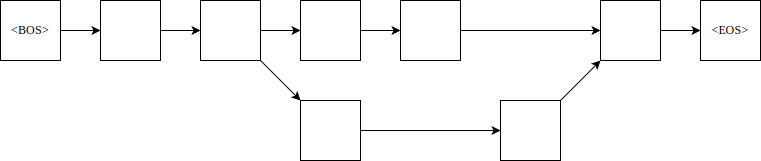

自然语言处理实验
实验三
采用 2 元文法进行文本分词消歧
| 学院 | 信息工程学院 |
| 指导教师 | 孙媛 |
| 班级 | 19 级计算机科学与技术 1 班 |
| 学生姓名 | John Doe |
| 学号 | 19000000 |
日期： 2021 年 11 月 7 日
摘要
目录
一、实验内容
在使用正向、逆向最大匹配等方式进行基于字典的分词时，总会遇到具有歧义的情况。
- 对于正向、逆向最大匹配结果中的歧义问题，采用 2 元文法进行消歧，并对消歧后的文本，再次计算 P、R、F1 值；
- 利用 2 元文法计算测试语料中每段话的概率。
参考训练语料为“1998 人民日报（已分词）”，可根据需要自行修改格式，也可以在训练语料中加入 jieba 分词的结果。
提交内容：
1、实验报告（包括实验原理，主要程序流程，实验结果及分析）
2、分词后的语料（部分），概率计算结果
3、实验源代码文件
本次实验主要做什么？
二、实验原理
在使用 FMM、BMM 等方式进行基于字典的分词时，总会遇到具有歧义的情况。
例如，“商品和服务”经过 FMM、BMM 分词，可以有以下的分词结果：
| 分词方式 | 分词结果 |
|---|---|
| FMM | ['商品', '和服', '务'] |
| BMM | ['商品', '和', '服务'] |
显然，第二种情况更为合理，因为第二种出现的概率较前一种更高。这便是统计自然语言处理。
于是，便可以通过对语言进行建模，以评估其出现的概率，进而达到消除歧义的目的。
N-Gram
考虑到自然语言的复杂多变，语料库中不可能穷尽所有的句子，因此，直接对语句进行统计是不现实的，于是，将词视作单位便是一个自然的选择。
可以将句子表示为“单词”列表，这里的“单词”指的是统计基元。将第 \(i\) 个基元记作 \(w_i\)，则句子 \(s\) 可以表示为以下形式：
\[s = w_1 w_2 \cdots w_n\]
其中， \(w_i\) 的概率由他之前的基元 \(w_1, w_2, ..., w_{i-1}\) 决定，也称作 \(w_i\) 的历史串。
\[ \begin{align} p(s) & = p(w_1 w_2 \cdots w_n) \\ & = p(w_1 \vert w_0) \times p(w_2 \vert w_0 w_1) \times \cdots \times p(w_{n+1} \vert w_0 w_1 \cdots w_n) \\ & = \prod_{i=1}^{n+1}p(w_i \vert w_0 w_1 \cdots w_{i-1}) \\ \end{align} \]
上式中，\(w_0\) 为句子开始的标志（Begin Of Sentence），记作 \(\text{<BOS>}\)，\(w_n+1}\) 表示句子结束的标志（End Of Sentence），记作 \(\text{<EOS>}\)。
但是，上述方式下，随着历史串的长度的增加，语言模型中参数 p 的计算代价就会变得十分昂贵。于是，我们可以只考虑前 \(N-1\) 个基元，以得到一个近似的概率，这时得到的语言模型就称为 N 元文法（N-Gram）。
记 \(w_i^j\) 表示词 \(w_i\cdots w_j\)，则 N 元文法下句子的概率可以表示为：
\[p(s) \approx \prod_{i=1}^{n+1}{p(w_i| w_{i-N+1}^{i-1})p(w_i| w_{i-N+1}^{i-1})} \]
实际使用中，通常使用一元、二元、三元文法进行处理。
假设句子“John read a book”，当使用 2 元文法计算概率时，就是如下的结果：
\[ \begin{align} P(\text{John read a book}) =& P(\text{John | <BOS>}) \times \\ & P(\text{read | John }) \times \\ & P(\text{a | read }) \times \\ & P(\text{book | a }) \times \\ & P(\text{<EOS> | book }) \end{align} \]
N-Gram 中，\( p(w_i| w_{i-N+1}^{i-1}) \) 可由最大似然估计求得：
\[ p(w_i | w_{i-n+1}^{i-1}) = f(w_i | w_{i-n+1}^{i-1}) = \frac{c(w_{i-n+1}^{i})}{ \sum_{w}{c(w_{i-n+1}^{i-1} w)} } \]
公式中的 \(w\) 表示任意词，因此 \(\sum_{w}{c(w_{i-n+1}^{i-1} w)}\) 实际上就是 \( w_{i-n+1}^{i-1} \) 在训练语料中的出现次数，即 \(c(w_{i-n+1}^{i-1})\)。\( f(w_i | w_{i-n+1}^{i-1}) \) 是在给定 \( w_{i-n+1}^{i-1} \) 的条件下，\(w_i\) 出现的相对频度。
假设给定训练语料：
John read Moby Dick
Mary read a different book
She read a booky by Cher
\[ \begin{align} & P(\text{John} | \text{<BOS>}) = \frac{ c( \text{<BOS> John} ) }{ c( \text{<BOS>} ) } = \frac 1 3 \\ & P(\text{read} | \text{John} ) = \frac{ c( \text{John read} ) }{ c( \text{John} ) } = \frac 1 1 \\ & P(\text{a} | \text{read} ) = \frac{ c( \text{read a} ) }{ c( \text{read} ) } = \frac 2 3 \\ & P(\text{book} | \text{a} ) = \frac{ c( \text{a book} ) }{ c( \text{a} ) } = \frac 1 2 \\ & P(\text{<EOS>} | \text{book} ) = \frac{ c( \text{book <EOS>} ) }{ c( \text{book} ) } = \frac 1 2 \end{align} \]
则 \(P(\text{John read a book}) = \frac 1 3 \times 1 \times \frac 2 3 \times \frac 1 2 \times \frac 1 2 \approx 0.06 \)。
考虑句子“Cher read a book”，可得 \( P(\text{Cher read a book}) = P(\text{Cher} | \text{<BOS>}) \times P(\text{read} | \text{Cher} ) \times P(\text{a} | \text{read} ) \times P(\text{book} | \text{a} ) \times P(\text{<EOS>} | \text{book} ) \)。
又 \[ \begin{align} & P(\text{Cher} | \text{<BOS>}) = \frac{ c( \text{<BOS> Cher} ) }{ c( \text{<BOS>} ) } = \frac 0 3, \\ & P(\text{read} | \text{Cher} ) = \frac{ c( \text{Cher read} ) }{ c( \text{Cher} ) } = \frac 0 1 \end{align} \]
最终得 \(P(\text{Cher read a book}) = 0\)。
数据平滑
在上面的例子中，由于数据匮乏，导致了零概率问题。对此，需要使用数据平滑来调整最大似然估计得概率值，使零概率增值，使非零概率下调，从而消除零概率，提高模型的整体正确率。
一种简单的方法即为加 1 法，即将每一种情况出现的次数加 1。在 1 元文法（uni-gram）下，设有 \(w_1, w_2, w_3\) 三个词，概率分别为：1/3, 0, 2/3，则“加 1”后，它们的概率变为 2/6, 1/6, 3/6（由于每个词的数量都增加了 1 个，词的总数变为了 6，因此分母为 6）。
对于 2 元文法，假定所有语料的词汇量（全部可能的基元数）为 V，则 \( P(w_i | w_{i-1}) = \frac{1+c(w_{i-1}w_i)}{|V| + c(w_{i-1})} \)。
训练
训练过程即为统计二元语法频次以及一元语法频次，建立相应的统计语言模型。
训练文本通常由一个或多个句子组成。比如，训练样本有下面这样的语句：
一 只 黑叶猴 和 一 只 灰叶猴 因 吃 了 游客 投 喂 的 食物 ， 腹泻 、 腹胀 而 死 。
这样以间隔符间隔开的语句可以视作列表的形式：
[ '一', '只', '黑叶猴', '和', '一', '只',
'灰叶猴', '因', '吃', '了', '游客',
'投', '喂', '的', '食物', '，',
'腹泻', '、', '腹胀', '而', '死', '。' ]
本实验计划以短句作为句子的单位，并规定了一组用于断句的标点符号。
punctuations = {',', '，', ';', '；', '。', '!', '！', '?', '？', '（', '）', '—'}
根据二元文法对列表中的词进行匹配，可以得到下边的结果：
[ ('<BOS>', '一只'), ('一只', '黑叶猴'), ('黑叶猴', '和'), ('和', '一只'),
('一只', '灰叶猴'), ('灰叶猴', '因'), ('因', '吃'), ('吃', '了'),
('了', '游客'), ('游客', '投'), ('投', '喂'), ('喂', '的'), ('的', '食物'),
('食物', '<EOS>'), ('<BOS>', '腹泻'), ('腹泻', '腹胀'), ('腹胀', '而'),
('而', '死'), ('死', '<EOS>') ]
将这些元组交与用于训练二元文法模型的函数。
按照行来读取文本，并将列表形式的数据
消除歧义
对于某一句话，不同的分词方法，可能会得到不同的结果。结果中的不同之处被视作“歧义”。为了得到相对情况下最为准确的分词结果，需要在每处歧义选择最佳的词元组合。
我们可以将不同分词结果中的分词情况表示在一张图上。
下面以对“他是研究生物的”的两种分词结果为例。
| 分词方式 | 分词结果 |
|---|---|
| FMM | ['他', '是', '研究生', '物', '的'] |
| BMM | ['他', '是', '研究', '生物', '的'] |
上面两种分词结果可以形成一无环有向图，即下图所示的网络结构。

图上任意一条有向边代表的转化关系，即是该边连结的起始结点的词语 \(c_1, c_2\) 在二元文法下的概率 \(p(c_2 |c_1)\)。我们希望找到概率最大的句子，即从起点到终点的一条路径，其经过的边代表的概率之积最大；若我们将图上的每一条边的权值定为概率 \(p\) 的负对数，则求最大概率乘积的问题可以转变为图上的最短路问题。
三、整体框架
包含整体框图，各主要模块的功能。
图表都需要 带编号
四、主要程序模块
详细介绍各个主要模块的功能及实现流程。
五、实验结果
详细分析实验结果，除了包含定量评价，还要有定性评价。 对存在的问题，要着重剖析。
六、总结
除了对整个实验进行概要总结，如果有程序亮点，可以在这阐述。
参考文献
如有参考文献，请附上。